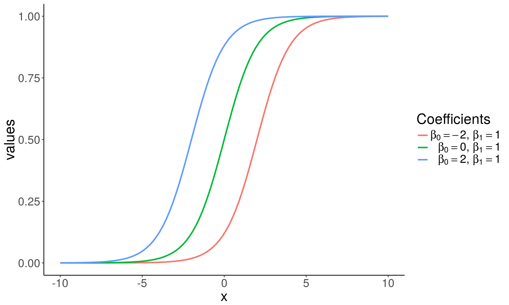
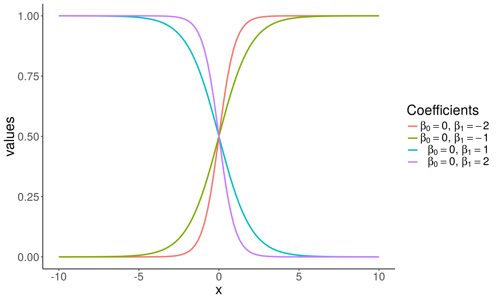
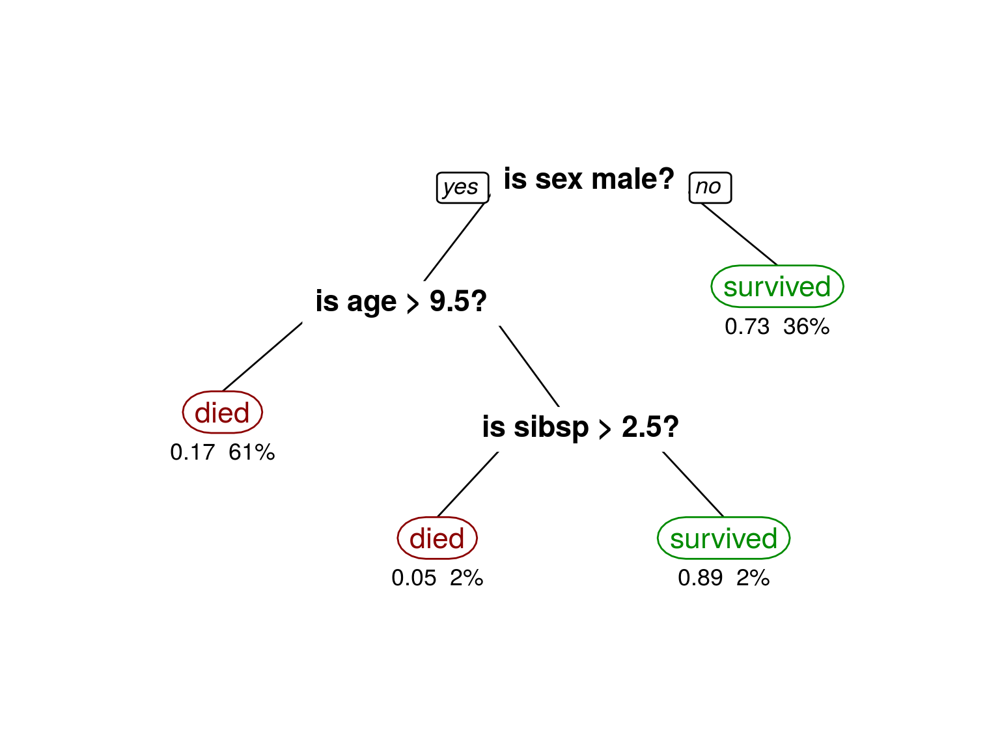
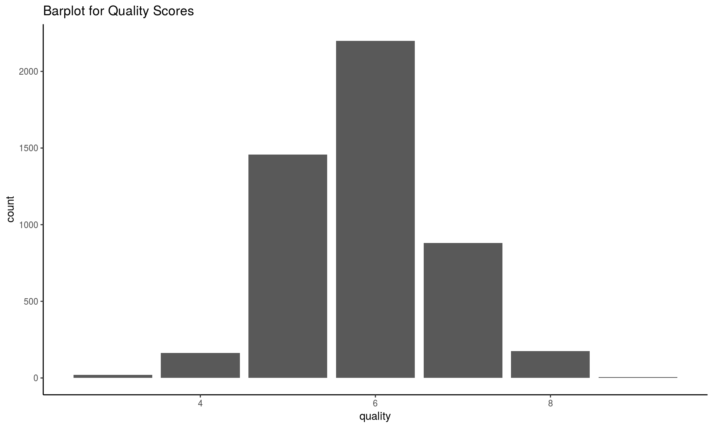
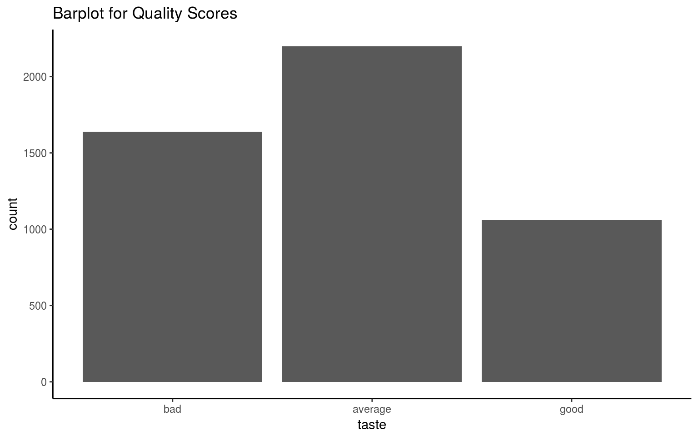
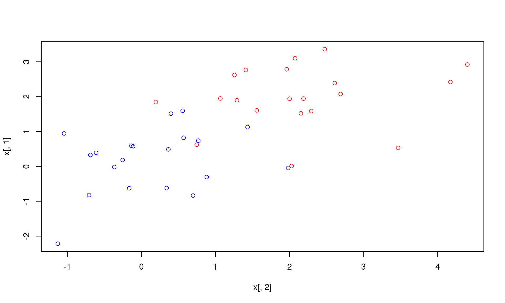
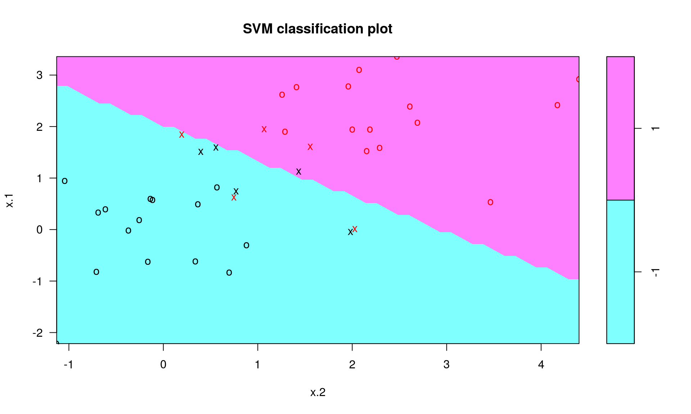
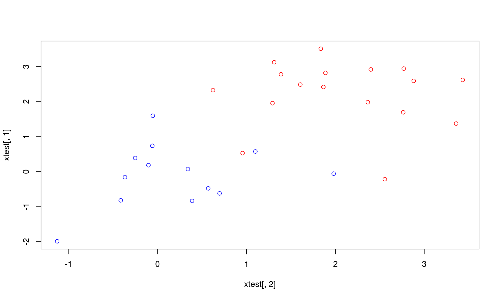
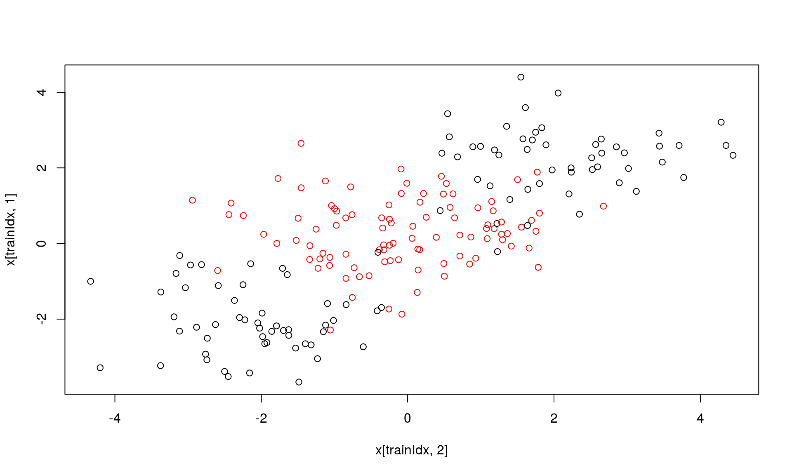
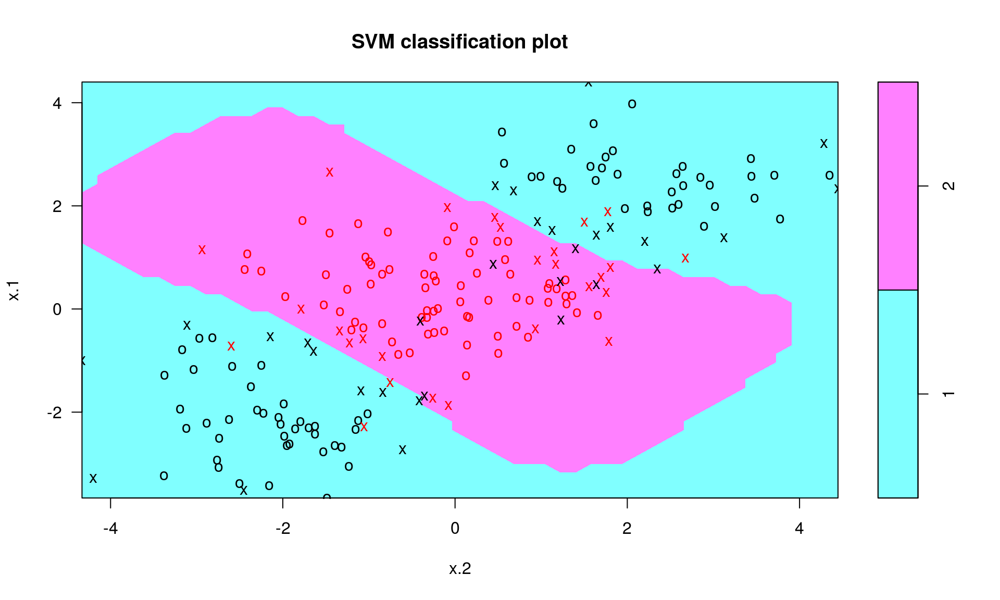

Lecture 7: Classification
October 24, 2017
Contents
- Logistic Regression
- Random Forest
- Extra: Support Vector Machines
Classification
Classification is a supervised methood which deals with prediction outcomes or response variables that are qualitative, or categorical.
The task is to classify or assign each observation to a category or a class.
- Examples of classification problems include:
- predicting what medical condition or disease a patient has base on their symptoms,
- determining cell types based on their gene expression profiles (single cell RNA-seq data).
- detecting fraudulent transactions based on the transaction history
Logistic Regression
Logistic Regression
Logistic regression is actually used for classification, and not regression tasks, \(Y \in \{0, 1\}\).
The name regression comes from the fact that the method fits a linear function to a continuous quantity, the log odds of the response.
\[ p = P[Y = 1 \mid X]\\ \log\left(\frac{p}{1-p}\right) = X\beta = \beta_0 + \beta_1^Tx \]
- The method performs binary classification (k = 2), but can be generalized to handle \(k > 2\) classes (multinomial logistic regression).
\[ \begin{align*} g(p) &= \log\left(\frac{p}{1 - p}\right), \quad \quad \; \text{ ( logit a link function ) } \\ g^{-1}(\eta) &= \frac{1}{1 + e^{-\eta}}, \quad \quad \quad \quad \text{ ( logistic function ) }\\ \eta &= X\beta, \quad \quad \quad \quad \quad \quad \text{ ( linear predictor ) } \\ &\\ E[Y] &= P[Y = 1 \mid X = x] \quad \; \text{ ( probability of outcome ) } \\ &= p = g^{-1}(\eta) \\ & = {1 \over 1 + e^{-X\beta}} \end{align*} \]


Grad School Admissions
Suppose we would like to predict students’ admission to graduate school based on their GRE, GPA, and the rank of their undergraduate institution.
admissions <- read.csv("https://stats.idre.ucla.edu/stat/data/binary.csv")
admissions <- tbl_df(admissions)
admissions## # A tibble: 400 x 4
## admit gre gpa rank
## <int> <int> <dbl> <int>
## 1 0 380 3.61 3
## 2 1 660 3.67 3
## 3 1 800 4.00 1
## 4 1 640 3.19 4
## 5 0 520 2.93 4
## 6 1 760 3.00 2
## 7 1 560 2.98 1
## 8 0 400 3.08 2
## 9 1 540 3.39 3
## 10 0 700 3.92 2
## # ... with 390 more rowssummary(admissions)## admit gre gpa rank
## Min. :0.0000 Min. :220.0 Min. :2.260 Min. :1.000
## 1st Qu.:0.0000 1st Qu.:520.0 1st Qu.:3.130 1st Qu.:2.000
## Median :0.0000 Median :580.0 Median :3.395 Median :2.000
## Mean :0.3175 Mean :587.7 Mean :3.390 Mean :2.485
## 3rd Qu.:1.0000 3rd Qu.:660.0 3rd Qu.:3.670 3rd Qu.:3.000
## Max. :1.0000 Max. :800.0 Max. :4.000 Max. :4.000sapply(admissions, sd)## admit gre gpa rank
## 0.4660867 115.5165364 0.3805668 0.9444602Check that there are observations included in each subgroup, and whether the data is balanced:
with(admissions, table(admit, rank))## rank
## admit 1 2 3 4
## 0 28 97 93 55
## 1 33 54 28 12Logistic Regression in R
- In R logistic regression can be done using a function
glm(). glmstands for Generalized Linear Model.- The function can fit many other regression models. Use
?glmto learn more. - For cases with \(k >2\) classes,
multinom()function fromnnetpackage can be used. To see how go over this example.
Note that currently the column ‘admit’ and ‘rank’ in admissions are integers.
sapply(admissions, class)## admit gre gpa rank
## "integer" "integer" "numeric" "integer"We convert the two columns to factors.
admissions <- mutate(admissions,
admit = factor(admit, levels = c(0, 1), labels = c("rejected", "admitted")),
rank = factor(rank, levels = 1:4)
)
admissions## # A tibble: 400 x 4
## admit gre gpa rank
## <fctr> <int> <dbl> <fctr>
## 1 rejected 380 3.61 3
## 2 admitted 660 3.67 3
## 3 admitted 800 4.00 1
## 4 admitted 640 3.19 4
## 5 rejected 520 2.93 4
## 6 admitted 760 3.00 2
## 7 admitted 560 2.98 1
## 8 rejected 400 3.08 2
## 9 admitted 540 3.39 3
## 10 rejected 700 3.92 2
## # ... with 390 more rowsSplit data
Divide data into train and test set so that we can evaluate the model accuracy later on. Here we use 70%-30% split.
set.seed(123456)
train.idx <- sample(nrow(admissions), 0.7*nrow(admissions))
train <- admissions[train.idx, ]
test <- admissions[-train.idx, ]Fitting a logistic regression model
fit.logit <- glm(admit ~ gre + gpa + rank, data = train,
family = "binomial")The first argument,
formula = admit ~ gre + gpa + rank,
specifies the linear predictor part, \(\eta = X\beta\).You need to set the family to
family = "binomial"equivalent to choosing a logistic regression, i.e. using a logit link function \(g(\cdot)\) in a GLM model.
summary(fit.logit)##
## Call:
## glm(formula = admit ~ gre + gpa + rank, family = "binomial",
## data = train)
##
## Deviance Residuals:
## Min 1Q Median 3Q Max
## -1.4811 -0.8899 -0.6611 1.1862 2.0721
##
## Coefficients:
## Estimate Std. Error z value Pr(>|z|)
## (Intercept) -3.626928 1.333747 -2.719 0.00654 **
## gre 0.003061 0.001311 2.335 0.01953 *
## gpa 0.500902 0.386621 1.296 0.19512
## rank2 -0.502376 0.378062 -1.329 0.18391
## rank3 -0.980873 0.407041 -2.410 0.01596 *
## rank4 -1.237913 0.493217 -2.510 0.01208 *
## ---
## Signif. codes: 0 '***' 0.001 '**' 0.01 '*' 0.05 '.' 0.1 ' ' 1
##
## (Dispersion parameter for binomial family taken to be 1)
##
## Null deviance: 350.14 on 279 degrees of freedom
## Residual deviance: 324.87 on 274 degrees of freedom
## AIC: 336.87
##
## Number of Fisher Scoring iterations: 4Logistic regression coefficients for continuous predictors (covariates) give the log fold change in the odds of the outcome corresponding to a unit increase in the predictor.
\[ \begin{align*} \beta_{cont} &= \log \left({P[Y = 1 \;| \; X_{cont} = x + 1 ] \over P[Y = 1\;|\; X_{cont} = x]} \right)\\ \end{align*} \]
Categorical features (factors) are first converted to indicator variables and then the model fits separate coefficients for each level of the factor. Coefficients corresponding to a specific indicator variable give the increase/decrease in the log odds of the outcome in case the observation is recorded with that level.
\[ \begin{align*} \beta_{facL} &= \log \left({P[Y = 1 \;| \; X_{fac} = L ] \over P[Y = 1\;|\; X_{fac} \ne L ]} \right)\\ \end{align*} \]
coef(fit.logit)## (Intercept) gre gpa rank2 rank3
## -3.626927707 0.003061239 0.500901628 -0.502375799 -0.980872661
## rank4
## -1.237912642For every unit increase in
gre, the log odds of admitted (versus rejected) increases by \(\approx\) 0.0030612.For every unit increase in
gpa, the log odds increases by \(\approx\) 0.5009016.There are three coefficients for the rank variable, e.g. a student attending a college with rank 2, one with rank 1 (base level), has the log admission odds decreased by \(\approx\) -0.5023758.
You can get the confidence intervals for the coefficients with the confint() fuinction
confint(fit.logit)## Waiting for profiling to be done...## 2.5 % 97.5 %
## (Intercept) -6.3005033773 -1.055267675
## gre 0.0005270972 0.005682988
## gpa -0.2517254914 1.269320820
## rank2 -1.2478927740 0.239891701
## rank3 -1.7887087854 -0.186990834
## rank4 -2.2410453972 -0.293855964The \(95\%\) CI are away from zero which indicates significance.
Rank variable effect is given with three different coeffients.
We can sse wald.test() function from the aod package to test the overall effect of ‘rank’.
# install.packages(aod)
library(aod)
wald.test(b = coef(fit.logit), Sigma = vcov(fit.logit), Terms = 4:6)## Wald test:
## ----------
##
## Chi-squared test:
## X2 = 8.8, df = 3, P(> X2) = 0.033bsupplies the coefficients,Sigmasupplies the variance covariance matrix of the error terms,Termsindices of the coefficients to be tested; here 4, 5, and 6, corresponding to ‘rank’.
The p-value indicates that the overall effect of rank is statistically significant.
Predictions
Predictions can be computed using predict() function, with the argument type = "response". Otherwise, the default will compute predictions on the scale of the linear predictors.
# Must have the same column names as the variables in the model
newStudents <- data.frame(gre = c(670, 790, 550),
gpa = c(3.56, 4.00, 3.87),
rank = factor(c(1, 2, 2)))
# The output is the probability of admissions for each of the new students.
newStudents <- newStudents %>%
mutate(
pred.prob.admit = predict(fit.logit, newdata = newStudents,
type = "response"),
admit = factor(pred.prob.admit < 0.5, levels = c(TRUE, FALSE),
labels = c("rejected", "admitted"))
)
newStudents## gre gpa rank pred.prob.admit admit
## 1 670 3.56 1 0.5516432 admitted
## 2 790 4.00 2 0.5726525 admitted
## 3 550 3.87 2 0.3758659 rejectedTest Set Predictions
pred.prob.admit <- predict(fit.logit, newdata = test, type = "response")
admit <- factor(pred.prob.admit < 0.5, levels = c(TRUE, FALSE),
labels = c("rejected", "admitted"))
(confusion.matrix <- table(pred = admit, true = test$admit))## true
## pred rejected admitted
## rejected 80 34
## admitted 2 4# Accuracy
sum(diag(confusion.matrix))/nrow(test)## [1] 0.7Exercise
Go to the “Lec7_Exercises.Rmd” file, which can be downloaded from the class website under the Lecture tab.
Complete Exercise 1.
Random Forest
Random Forest
- Random Forest is an ensemble learning method based on classification and regression trees, CART, proposed by Breinman in 2001.
- RF can be used to perform both classification and regression.
- RF models are robust as they combine predictions calculated from a large number of decision trees (a forest).
- Details on RF can be found in Chapter 8 of ISL and Chapter 15 ESL; also a good write-up can also be found here
Decision trees
Cool visualization explaining what decision trees are: link
Decision tree on classification of Titanic Survivors:

Tree bagging Algorithm
Suppse we have an input data matrix, \(X \in \mathbb{R}^{N \times p}\) and a response vector, \(Y \in \mathbb{R}^N\).
For b = 1, 2, …, B:
\(\quad\) 1. Generate a random subset of the data \((X_b, Y_b)\) contatining \(n < N\)
\(\quad \;\) observations sampled with replacement.
\(\quad\) 2. Train a decision tree \(T_b\) on \((X_b, Y_b)\)
\(\quad\) 3. Predict the outcome for \(N-n\;\) unseen (complement) samples \((X_b', Y_b')\)
Afterwards, combine predictions from all decision trees and compute the average predicted outcome .
Averaging over a collection of decision trees makes the predictions more stable.
Decision trees for bootrap samples

Source: Chapter 8 ESL
Random Forest Characteristics
Random forests differ in only one way from tree bagging: it uses a modified tree learning algorithm sometimes called feature bagging.
At each candidate split in the learning process, only a random subset of the features is included in a pool from which the variables can be selected for splitting the branch.
Introducing randomness into the candidate splitting variables, reduces correlation between the generated trees.


Source: link
Wine Quality
UCI ML Repo includes two datasets on red and white variants of the Portuguese “Vinho Verde” wine. The datasets contain information on physicochemical and sensory characteristics of the wine quality score.
We will use the white wines dataset to classify wines according to their quality classes.
url <- 'https://archive.ics.uci.edu/ml/machine-learning-databases/wine-quality/winequality-white.csv'
wines <- tbl_df(read.csv(url, sep = ";"))
print(wines, n = 6)## # A tibble: 4,898 x 12
## fixed.acidity volatile.acidity citric.acid residual.sugar chlorides
## <dbl> <dbl> <dbl> <dbl> <dbl>
## 1 7.0 0.27 0.36 20.7 0.045
## 2 6.3 0.30 0.34 1.6 0.049
## 3 8.1 0.28 0.40 6.9 0.050
## 4 7.2 0.23 0.32 8.5 0.058
## 5 7.2 0.23 0.32 8.5 0.058
## 6 8.1 0.28 0.40 6.9 0.050
## # ... with 4,892 more rows, and 7 more variables:
## # free.sulfur.dioxide <dbl>, total.sulfur.dioxide <dbl>, density <dbl>,
## # pH <dbl>, sulphates <dbl>, alcohol <dbl>, quality <int>Class Frequency
ggplot(wines, aes(x = quality)) +
geom_bar() + theme_classic() +
ggtitle("Barplot for Quality Scores")
The classes are ordered and not balanced (munch more normal wines than excellent/poor ones).
To make things easier, we will wines into “good”, “average” and “bad” categories.
The new classes will be more balanced, and it will be easier to fit the model.
qualClass <- function(quality) {
if(quality > 6) return("good")
if(quality < 6) return("bad")
return("average")
}
wines <- mutate(wines, taste = sapply(quality, qualClass),
taste = factor(taste, levels = c("bad", "average", "good")))
wines## # A tibble: 4,898 x 13
## fixed.acidity volatile.acidity citric.acid residual.sugar chlorides
## <dbl> <dbl> <dbl> <dbl> <dbl>
## 1 7.0 0.27 0.36 20.7 0.045
## 2 6.3 0.30 0.34 1.6 0.049
## 3 8.1 0.28 0.40 6.9 0.050
## 4 7.2 0.23 0.32 8.5 0.058
## 5 7.2 0.23 0.32 8.5 0.058
## 6 8.1 0.28 0.40 6.9 0.050
## 7 6.2 0.32 0.16 7.0 0.045
## 8 7.0 0.27 0.36 20.7 0.045
## 9 6.3 0.30 0.34 1.6 0.049
## 10 8.1 0.22 0.43 1.5 0.044
## # ... with 4,888 more rows, and 8 more variables:
## # free.sulfur.dioxide <dbl>, total.sulfur.dioxide <dbl>, density <dbl>,
## # pH <dbl>, sulphates <dbl>, alcohol <dbl>, quality <int>, taste <fctr>table(wines$quality)##
## 3 4 5 6 7 8 9
## 20 163 1457 2198 880 175 5ggplot(wines, aes(x = taste)) +
geom_bar() + theme_classic() +
ggtitle("Barplot for Quality Scores")
Splitting data
We include 60% of the data in a train set and the remaining into a test set.
set.seed(123)
train.idx <- sample(nrow(wines), 0.6 * nrow(wines))
train <- wines[train.idx, ]
test <- wines[-train.idx, ]
dim(train)## [1] 2938 13dim(test)## [1] 1960 13Random Forest in R
In R there is a convenient function randomForest from randomForest package.
# install.packages("randomForest")
library(randomForest)## randomForest 4.6-12## Type rfNews() to see new features/changes/bug fixes.##
## Attaching package: 'randomForest'## The following object is masked from 'package:dplyr':
##
## combine## The following object is masked from 'package:ggplot2':
##
## marginrf.wines <- randomForest(taste ~ . - quality, data = train,
mtry = 6, ntree = 600, importance = TRUE)Note that in the formula ‘
taste ~ . - quality’ means we include all features EXCEPT for ‘quality’ (the response variable).mtry- the number of variables randomly sampled as candidates at each split. Defaults: for classification – \(\sqrt{p}\) and for regression – \(p/3\), where \(p\) is number of all variables in the model.ntree- the number of trees in the forest.importance- whether importance of predictors be computed.
Observe, that RF is good at distinguishing “bad” wines from“good” wines, but still struggles when it comes to “average” wines.
rf.wines##
## Call:
## randomForest(formula = taste ~ . - quality, data = train, mtry = 6, ntree = 600, importance = TRUE)
## Type of random forest: classification
## Number of trees: 600
## No. of variables tried at each split: 6
##
## OOB estimate of error rate: 30.12%
## Confusion matrix:
## bad average good class.error
## bad 677 278 18 0.3042138
## average 228 971 117 0.2621581
## good 20 224 405 0.3759630Model Accuracy
You should always evaluate your model’s performance on a test set, which was set aside and not observed by the method at all.
In case of RF, performance on train and test set should be similar; this is because the method averages predictions computed by individual trees for observations unseen by the tree.
Inspect the confusion matrix to asses the model accuracy.
pred <- predict(rf.wines, newdata = test)
(confusion.mat <- table(pred, truth = test$taste))## truth
## pred bad average good
## bad 476 131 9
## average 178 661 151
## good 13 90 251(rf.accuracy <- sum(diag(confusion.mat)) / nrow(test))## [1] 0.7081633## Look at variable importance:
importance(rf.wines)## bad average good MeanDecreaseAccuracy
## fixed.acidity 31.61926 25.98041 36.16006 49.52878
## volatile.acidity 65.62247 53.90561 78.14410 100.81170
## citric.acid 29.32895 30.59606 42.66566 51.41656
## residual.sugar 34.76200 36.22169 34.11017 57.45461
## chlorides 38.82683 24.70974 59.44965 64.23190
## free.sulfur.dioxide 51.67186 35.52296 44.81158 68.81886
## total.sulfur.dioxide 29.64474 25.20661 44.60063 54.97681
## density 32.81271 26.11959 44.55753 56.24973
## pH 37.88014 26.46448 46.75563 59.06318
## sulphates 28.53080 28.27934 42.38525 53.00674
## alcohol 88.94843 39.38382 96.90979 118.11452
## MeanDecreaseGini
## fixed.acidity 130.1805
## volatile.acidity 197.2117
## citric.acid 143.9020
## residual.sugar 156.1524
## chlorides 159.6429
## free.sulfur.dioxide 180.5619
## total.sulfur.dioxide 162.8233
## density 188.9939
## pH 156.6557
## sulphates 138.7374
## alcohol 266.9109What seems to be the conclusion? What are the characteristics that are predictive of the wine quality score?
varImpPlot(rf.wines)
Exercise
Go to the “Lec7_Exercises.Rmd” file, which can be downloaded from the class website under the Lecture tab.
Complete Exercise 2.
Support Vector Machines
Suport Vector Machines (SVM)
Method invented by Vladimir N. Vapnik and Alexey Ya. Chervonenkis in 1963.
The idea is to find the best hyperplane sepparating observations from 2 different classes, where the best means the one that represents the largest separation or margin.
The Andrew Ng’s CS229 lecture and notes are good resources to learn about principles of SVMs.
More details can also be found in Chapter 9 ISL and Chapter 12 ESL


SVM Problem
\[\begin{align} \max_{w, b} & \quad \frac{2}{\|w\|} \\ s.t. \; \forall i: \; y_i (w \cdot & x_i + b) \ge 1 \end{align}\]which can be converted to:
\[\begin{align} \min_{w, b} \quad {1 \over 2}& \|w\|^2 \\ s.t. \; \forall i: \; y_i (w \cdot x_i & + b) \ge 1 \end{align}\]SVM Problem
Sometimes the data is not linearly separable, and regularization/soft-margin works better: \[\begin{align} \min_{w, b} {1 \over 2} \|w\|^2 & + C \sum_{i = 1}^n \xi_i\\ s.t. \; \forall i: \; y_i (w \cdot x_i + b) &\ge 1 - \xi_i\\ \xi_i &\ge 0 \end{align}\]Lagrangian:
\[\begin{align} \mathcal{L}(w, b, \xi, \alpha, r) = {1\over 2} & w^Tw + C \sum_{i = 1}^n \xi_i - \sum_{i = 1}^n r_i \xi_i \\ & -\sum_{i = 1}^n \alpha_i\left[ y_i (w \cdot x_i + b) - 1 + \xi_i\right] \end{align}\]SVM Example
We will do a simple example from the ISL computing SVM on a simulated data:
set.seed(1)
x <- matrix(rnorm(40*2), ncol=2)
y <- c(rep(-1,20), rep(1,20))
x[y == 1, ] <- x[y == 1, ] + 2
dat <- data.frame(x = x, y=as.factor(y))
head(dat)## x.1 x.2 y
## 1 -0.6264538 -0.1645236 -1
## 2 0.1836433 -0.2533617 -1
## 3 -0.8356286 0.6969634 -1
## 4 1.5952808 0.5566632 -1
## 5 0.3295078 -0.6887557 -1
## 6 -0.8204684 -0.7074952 -1plot(x[, 2], x[, 1], col=(3-y))
SVM in R
You can use the e1071 package to perform svm in R.
library(e1071)
# Set scale to be FALSE otherwise by default x is scaled to zero mean and unit variance
svmfit <- svm(y ~ ., data=dat, kernel="linear", cost = 10, scale=FALSE)
summary(svmfit)##
## Call:
## svm(formula = y ~ ., data = dat, kernel = "linear", cost = 10,
## scale = FALSE)
##
##
## Parameters:
## SVM-Type: C-classification
## SVM-Kernel: linear
## cost: 10
## gamma: 0.5
##
## Number of Support Vectors: 10
##
## ( 5 5 )
##
##
## Number of Classes: 2
##
## Levels:
## -1 1svmfit$index## [1] 4 8 11 15 16 24 27 34 35 37plot(svmfit, dat)
svmfit <- svm(y~., data=dat, kernel="linear", cost=0.05, scale=FALSE)
svmfit$index## [1] 2 3 4 7 8 9 10 11 15 16 19 20 24 25 27 28 29 32 34 35 36 37 38summary(svmfit)##
## Call:
## svm(formula = y ~ ., data = dat, kernel = "linear", cost = 0.05,
## scale = FALSE)
##
##
## Parameters:
## SVM-Type: C-classification
## SVM-Kernel: linear
## cost: 0.05
## gamma: 0.5
##
## Number of Support Vectors: 23
##
## ( 12 11 )
##
##
## Number of Classes: 2
##
## Levels:
## -1 1plot(svmfit, dat)
To find a best choice of the tuning parameter “C” use the tune() function
set.seed(1)
tune.out <- tune(svm,y ~ ., data=dat, kernel="linear",
ranges=list(cost=c(0.001, 0.01, 0.05, 0.1, 1,5,10,20)))
summary(tune.out)##
## Parameter tuning of 'svm':
##
## - sampling method: 10-fold cross validation
##
## - best parameters:
## cost
## 0.05
##
## - best performance: 0.1
##
## - Detailed performance results:
## cost error dispersion
## 1 1e-03 0.625 0.2946278
## 2 1e-02 0.450 0.2581989
## 3 5e-02 0.100 0.1290994
## 4 1e-01 0.125 0.1767767
## 5 1e+00 0.150 0.1748015
## 6 5e+00 0.125 0.1317616
## 7 1e+01 0.125 0.1317616
## 8 2e+01 0.125 0.1317616bestmod <- tune.out$best.model
plot(bestmod, dat)
We build a new test dataset from a similar model as we did for the train data.
set.seed(1)
xtest <- matrix(rnorm(30*2), ncol=2)
ytest <- sample(c(-1,1), 30, rep=TRUE)
xtest[ytest == 1, ] <- xtest[ytest == 1,] + 2
testdat <- data.frame(x = xtest, y = as.factor(ytest))
plot(xtest[, 2], xtest[, 1], col=(3-ytest))
ypred <- predict(bestmod, testdat)
table(predict = ypred, truth = testdat$y)## truth
## predict -1 1
## -1 13 1
## 1 0 16And for the non-tuned model we have:
svmfit <- svm(y~., data=dat, kernel = "linear", cost=10, scale = FALSE)
ypred <- predict(svmfit, testdat)
table(predict = ypred, truth = testdat$y)## truth
## predict -1 1
## -1 13 2
## 1 0 15Kernel SVM

Kernel SVM Example
Now suppose we have non-linearly separable data:
set.seed(1)
# Generate 200 points
x <- matrix(rnorm(400*2), ncol=2)
x[1:100,] <- x[1:100,] + 2
x[101:200,] <- x[101:200, ] - 2
y <- c(rep(1,200), rep(2,200))
dat <- data.frame(x = x, y = as.factor(y))
# Let a random half be a training set
trainIdx <- sample(400, 200)plot(x[trainIdx, 2], x[trainIdx, 1], col=y[trainIdx])
We will use the SVM with a radial kernel. Note that here we can additionally specify the gamma parameter for the radial function:
svmfit <- svm(y~., data=dat[trainIdx,], kernel = "radial", gamma=1, cost=1)
table(true = dat[-trainIdx,"y"], pred=predict(svmfit, newdata = dat[-trainIdx, ]))## pred
## true 1 2
## 1 81 16
## 2 11 92plot(svmfit, dat[trainIdx,])
We can tune both gamma and cost parameters:
tune.out <- tune(svm, y~., data=dat[trainIdx,], kernel="radial",
ranges=list(cost=seq(0.01, 15, length.out = 10),
gamma=seq(0.01, 5, length.out = 5)))
table(true = dat[-trainIdx,"y"],
pred = predict(tune.out$best.model, newdata = dat[-trainIdx,]))## pred
## true 1 2
## 1 84 13
## 2 12 91plot(tune.out$best.model, dat[trainIdx,])